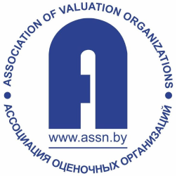

Кафедра «Информационные технологии в управлении» образована в феврале 2008 г. на базе кафедры «Дистанционные технологии образования» в Международном институте дистанционного образования для подготовки экономистов и менеджеров с учетом достижений информационных технологий. Кафедру возглавляет кандидат социологических наук, доцент Александренков Юрий Викторович. На кафедре работают: 1 доктор наук, профессор, 8 кандидатов наук, доцентов, 10 старших преподавателей. Кафедра поддерживает связи со многими ВУЗами страны: (БГЭУ, БГУИР, БГТУ), привлекая к учебном процессу с магистрантами и аспирантами высококвалифицированных преподавателей этих ВУЗов и участвуя в проведении занятий в этих университетах.
Темы заседаний кафедры на ближайший период:
- выполнение индивидуальных планов магистрантами;
- работа по профилактике коррупционных преступлений;
- обеспечение соблюдения принципа СТБ ISO 9001-2015 – привлечённости персонала (работников кафедры) в достижение качества образовательной деятельности.
Кафедра имеет филиал на базе «Ассоциации оценочных организаций».
Информация о филиале

Ассоциация оценочных организаций (далее – Ассоциация) создана в 2014 году и представляет собой некоммерческую организацию, объединяющую крупнейших исполнителей оценки страны.
Согласно положениям Устава основными задачами для Ассоциации являются: изучение и обобщение национального и международного опыта независимой оценки, проведение исследований в области оценочной деятельности, осуществление добровольной сертификации качества оказываемых услуг членами Ассоциации, популяризация профессии оценщика, а также представительство интересов членов Ассоциации в отношениях с международными профессиональными объединениями оценщиков и др. Сегодня членами Ассоциации являются 22 организации, в которых работают 310 оценщиков, что составляет более 40% от всех аттестованных в стране оценщиков. По экспертным оценкам в 2019 году членами Ассоциации оказано услуг на сумму около 9 млн. рублей, при этом общий объем отраслевого рынка услуг приближается к 19 млн. рублей.
За пять лет с момента регистрации Ассоциация со своими членами организовала и провела 31 проект, из которых 4 международных с участием представителей из 10 стран. Подписано 14 соглашений о сотрудничестве, среди которых БНТУ, Государственный комитет по имуществу Республики Беларусь (далее – Госкомимущество), а также иностранные профессиональные объединения оценщиков, организации и объединения из смежных сфер деятельности, как национальные, так и иностранные. Совместно с Госкомимуществом Ассоциацией разработан и утвержден профессиональный стандарт «Оценочная деятельность», в котором систематизированы знания, умения и компетенции, предъявляемые к оценщику работодателями. На базе профессионального стандарта становится 15.06.2020 возможным разработка соответствующего образовательного стандарта, в котором заинтересованы члены Ассоциации.
В 2019 году Ассоциация разработала и разместила на своем сайте Реестр исполнителей оценки, Биржу услуг по оценке и Калькулятор стоимости услуг (совместный проект с БНТУ). Данные ресурсы позволяют получить потенциальному заказчику представление об отраслевом рынке, его участниках, усредненной стоимости услуг на рынке и получить обратную связь от исполнителей оценки.
В 2020 году продолжается совместный проект с Ассоциацией белорусских банков по разработке совместного соглашения, направленного на систематизацию требований к оценке для целей залога, которые позволят вплотную приблизиться к разработке технического задания для программного продукта по оценке для целей залога типовых объектов оценки (квартир, автомобилей и др.).
В 2021 году предстоит активная работа по продвижению «национальной оценки» на едином рынке услуг Евразийского экономического союза, а также на международном рынке с учетом подходов, отраженных в Международных стандартах оценки.
assn.by